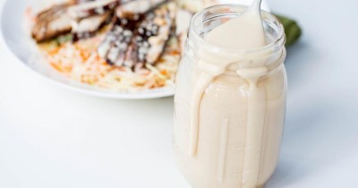

Китайский сливочный соус

Ингредиенты
- Сливки жирные - 100 мл
- Майонез - 200 гр
- Соус чили - 100 гр
- Перец чили - 4 гр
- Перец острый молотый - 2 гр
- Кунжут - 2 гр
- Мандариновая цедра - 2 гр
- Порошок имбиря - 2 гр
Рецепт приготовления
- Различные соусы в кулинарии используются для того, чтобы подчеркнуть и дополнить вкус основного блюда. И к каждому продукту подходит свой идеальный соус. Вкус рыбы и морепродуктов лучше всего оттеняют белые соусы, сделанные на основе молока или сливок. Одним из таких и является китайский сливочный соус. Его ароматный, аппетитный, кисло-сладкий вкус с легким острым налетом никого не оставит равнодушным.
- Готовить его достаточно просто и очень быстро. Ведь для этого не понадобится ничего ни варить, ни жарить, а взбить соус можно просто обычной ложкой.
- В небольшую миску вылить холодные сливки. Чтобы готовый соус получился нужной густой и тягучей консистенции, сливки лучше взять жирностью 33%.
- К сливкам добавить майонез и всё хорошо размешать. Можно использовать готовый майонез или приготовить его самостоятельно.
- Переложить в миску сладкий соус чили и снова все перемешать.
- Затем для китайского сливочного соуса понадобится специальная китайская приправа. Для того чтобы её приготовить, в отдельной посуде нужно перемешать перец чили, острый молотый перец и порошок имбиря. Добавить к специям семечки кунжута и цедру мандарина (можно заменить на цедру апельсина).
- Готовую приправу добавить в миску к соусу и все тщательно перемешать ложкой. Чтобы продукты лучше соединились друг с другом, можно немного взбить блендером на небольших оборотах, но так, чтобы сливки не сильно загустели.
- Соус перелить в чистую герметичную посуду и хранить в холодильнике в течение 4-5 дней. Готовый соус лучше всего подавать охлажденным. Он получается достаточно густым и идеально сочетается с рыбой и морепродуктами, оттеняя их нежный вкус. Им также можно полить суши, роллы или добавить к мясу. Приятного аппетита!
Вернуться к списку блюд